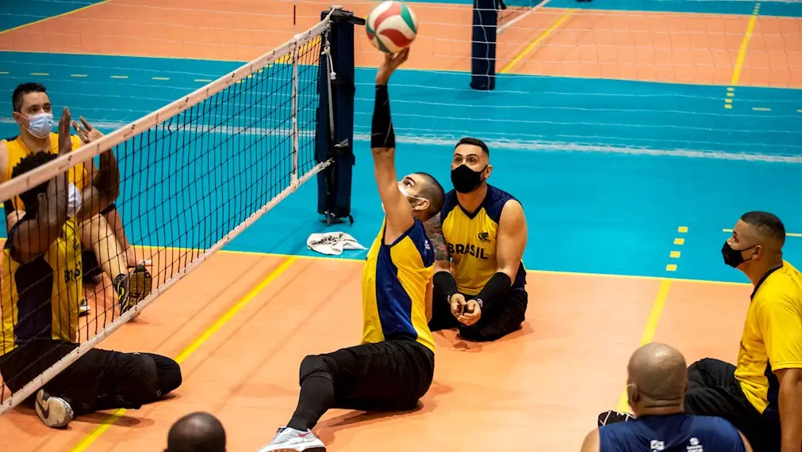
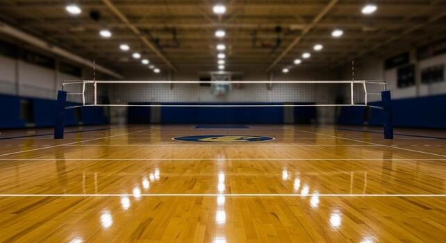
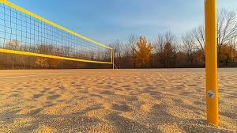

VOLEIBOL
O voleibol é um dos principais esportes jogados pelo mundo. Sua importância vai além de um simples jogo de quadra, chegando ao patamar de estilo de vida. O voleibol agrega no cotidiano como forma de lazer e exercício físico, trazendo benefícios para saúde e uma sensação de bem-estar. Além disso, o volei é benéfico para a coordenação motora e condicionamento fisico, visto que o esporte exige muita resistência e agilidade por parte dos jogadores. Ademais, o voleibol promove o desenvolvimento de habilidades sociais e colaborativas, fortalecendo os laços entre os participantes e incentivando o trabalho em equipe.
ESPORTE PARALÍMPICO

MODALIDADES DO VOLEIBOL
VÔLEI DE QUADRA

VÔLEI DE AREIA
